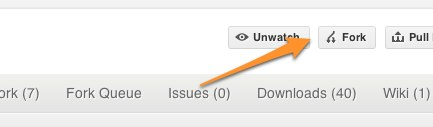

Git instructions for Community Documentation
Github has good documentation for how to fork a project. This page documents the FreeRADIUS-specific instructions.
We use account to refer to your specific account.
Detailed Instructions
Set up a Github account.
Go to the FreeRADIUS git page.
Click on fork

Clone the fork
$ git clone git@github.com:account/freeradius-server.git
Be sure that you have a copy of the "upstream" source, so that you can pull in changes made by other people.
$ cd freeradius-server $ git remote add upstream git@github.com:alandekok/freeradius-server.git $ git fetch upstream
Don't bother doing ./configure / make / make install.
Edit the files in the doc/ directory.
Commit them.
$ git commit doc/filename
Use a reasonable commit message describing what you changed.
Push the changes back to Github.
$ git push origin master
Tell us that you made a change. Go to your project's page, and click the "pull request" button. Fill in a note, and pick who to send the request to.
Periodically pull changes from "upstream".
$ git fetch upstream $ git merge upstream/master
If it says "merge conflict", the best thing to do is to revert to the "upstream" version. For each file that has a conflict, do:
$ git checkout --theirs doc/filename $ git add doc/filename
Followed by a commit
$ git commit files
And then push the changes back to Github.
$ git push origin master
That's it.